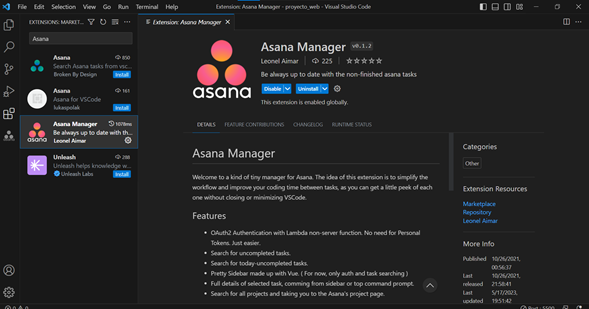

| Contenido | |
|---|---|
| Propósito de la herramienta | Proceso de instalación |
| Video de instalación (Auxiliar) | Evidencia de instalación |
Asana es una herramienta de gestión de proyectos y colaboración en equipo. Su propósito principal es ayudar a los equipos a organizar, dar seguimiento y gestionar tareas y proyectos de manera eficiente. Asana ofrece características como la asignación de tareas, seguimiento de progreso, calendarios, notificaciones y colaboración en tiempo real para facilitar la planificación y ejecución de proyectos.
Asana es una herramienta basada en la web, por lo que no requiere una instalación tradicional en tu dispositivo. Para utilizar Asana, sigue estos pasos:
En este video se explica cómo comenzar a utilizar Asana:
Esta es mi evidencia de Instalacion
